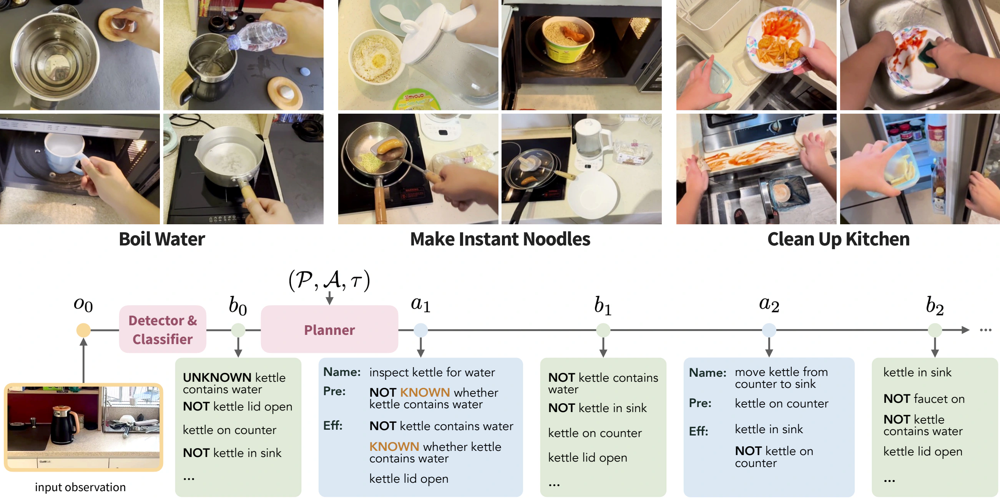

Learning to Plan with Natural-Language World Models from Human Egocentric Videos
Under Review, 2026
PAW learns a natural-language abstract world model from unlabelled egocentric videos and uses it to reconstruct state–action supervision. The same world model conditions the planner during supervised fine-tuning and inference, enabling planning beyond demonstrated procedures by recombining familiar actions to reach a given goal.